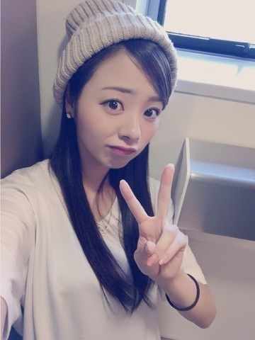
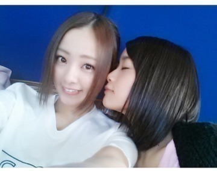
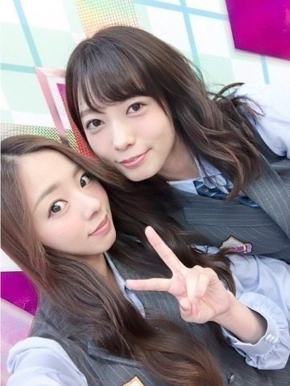
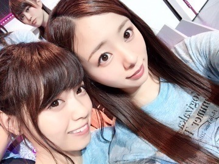

| 2016/06 19 Sun | 川村真洋 まいまい卒業おめでとう(#^.^#)guitar1人？寂ち。 まひろ |
こんにちわ♡
かわむら まひろです.＊

昨日は，京都にて握手会でした．
ポピパの衣装で参戦したんですが，終わった後メンバー達に「すごい似合ってるんだけど」と急に一気に褒められたもんだから，嬉しかったです．笑
握手会に来てくださった皆さん，ありがとうございました♬
昨夜，寝る前に乃木に入ってからの写真を全部見返し，まいまいとの懐かしい写真を見たりしていました♪♪
これは私が高校3年生の時ですね.＊
「気づいたら片思い」のMV撮影の時だと思います．
ぁ、やっぱそぉだ♡
これはMVの時の衣装だ．
まいまいにくんくんされとるぅ．

まいまいの卒業ライブは
まいまいにとっても，私達にとっても，ファンの皆さんにとっても最高のライブになったと思います(#^.^#)
私もまいまいの事が本当に大好きでした♪
私達は友達以上で家族未満な関係で，5年も一緒にいるから，ズバッと何か言われたりすることもあるし，時にはぶつかり合う事もありました．
でも本当に本当にまいまいは裏表が無く，よく人を褒めるし，いつも優しい笑顔で微笑んでくれます．
まいまいはいつも周りのことを見ていて，だからと言って何もかもしっかりしてる訳では無くて，たまに天然だったり可愛いボケだったり... まいまいは本当に暖かくて素敵な女性だと思います(#^.^#)
昨日，まいまいがこんなメールをくれました。
「おちゃめで、頑張り屋さんで、ダンスと歌が大好きで、いつも場を和ませてくれるろってぃーが大好きよ♪o(^▽^)o
ろってぃーの歌う，「強がる蕾」がめっちゃ聴きたい！」
と言ってくれました。
なんだろう。 何故かまいまいに言われると，全てに優しさを感じるんだよね。。 それに本当に嬉しい気持ちになれる． 強がる蕾歌う♡
あとあと...１６日のliveでは
まいチューブのコーナーで，乃木團の練習中の動画をでかいスクリーンに映し出されましたーー 笑♪♪ぁはは
私が，ポルノグラフィティさんになりきって歌う「気づいたら片思い」があるんですけど，まさかあの映像が世に出るとは思っていなかった(#^.^#)ぇへへ
きっと会場にいた人の中に，「まじでろってぃーこんな歌い方なの？」って勘違いした方もいるんではないでしょうか？ あくまであれは歌い方をポルノグラフィティさんに寄せてるだけなので，乃木坂のライブの時はちゃんと自分の歌い方をしてますからね♡笑
じゃん♡

46時間TV初日 ゆうりと～♪
やっぱ今回の46時間TVで
1番印象に残ってるのは，１日目の人狼ゲームとカラオケ対決かな～♡♡
2年前位にチームＤでめちゃくちゃ人狼をしていて，でもそれを皆さんの前でやるのは初めてだったので不思議な感じもありつつ，本当にめちゃくちゃ楽しかったです 笑笑♪
色々活躍できて良かったです．笑
それにカラオケでは，
ポルノグラフィティさんの「アポロ」をあきひとさんになりきって歌っちゃいましたー(#^.^#)ぇへへ メンバーも一緒にのってくれて最高でした♡
めっちゃくちゃ楽しかったし，本当にあの企画大好きーー！！笑
他のメンバーの歌も本当に良かった！ 若月とれいかの好きだったなぁぁ。 面白さで言うと，まあやが最高だったけどね♡笑 多分，うつってなかったけど，私が1番爆笑してた自信がある。 終始涙が止まらなかった。笑 だってさ，あの面白さやのに，スタイル良過ぎるんやもん。笑 身長と顔の小ささのバランスがっ、、笑 本当に何であんなにスタイルいいねん♡笑
それと電子台ですね！！
私は本当に帽子が大好きでして，お家から帽子を持参して行きました．そしたらjust40個。 でもお家に帰ったら２つ残ってたから42個，純奈に１つあげたので現在41個の帽子がお家にあります♡笑
これからもずっと帽子を愛し続けます♬
早くななせと鍋いきたい。。

ばいばい。♬